DERRIÈRE LES VITRES
(2024)
vidéo expérimentalephotographie
Regarder, observer, filmer avec une caméra. À l’arrière d’une voiture, le regard se balade dans la périphérie parisienne via des plans serrés, en mouvement, et superposés. Musique : Corntuth - A-008

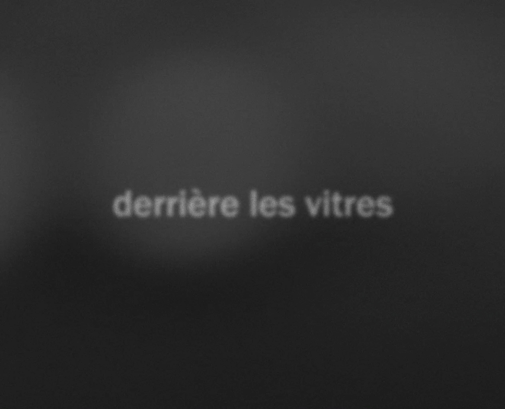
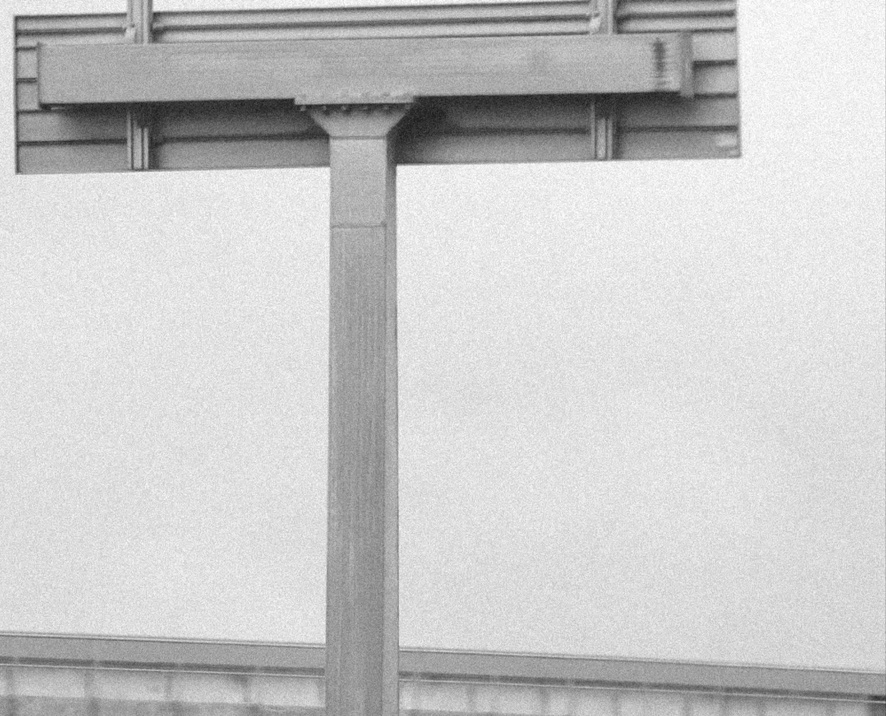
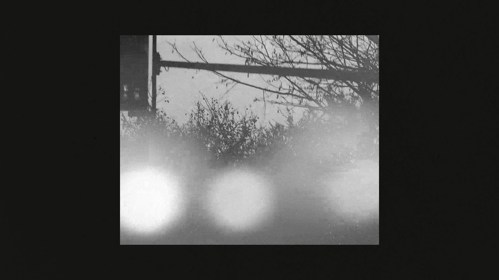
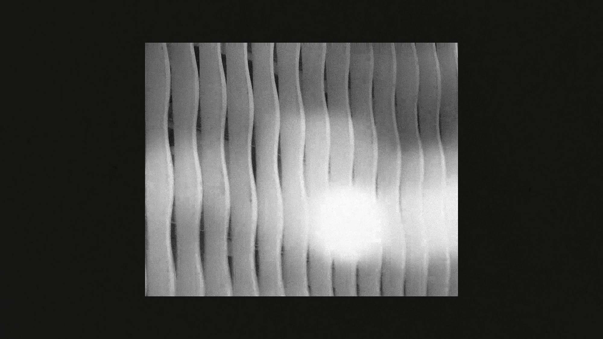
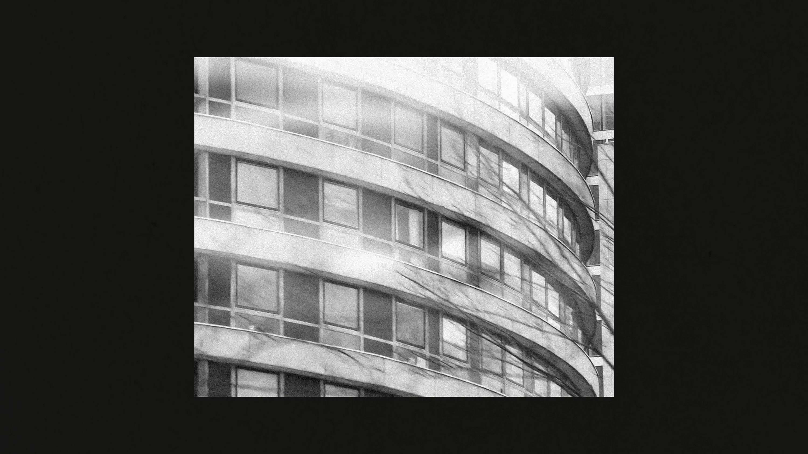
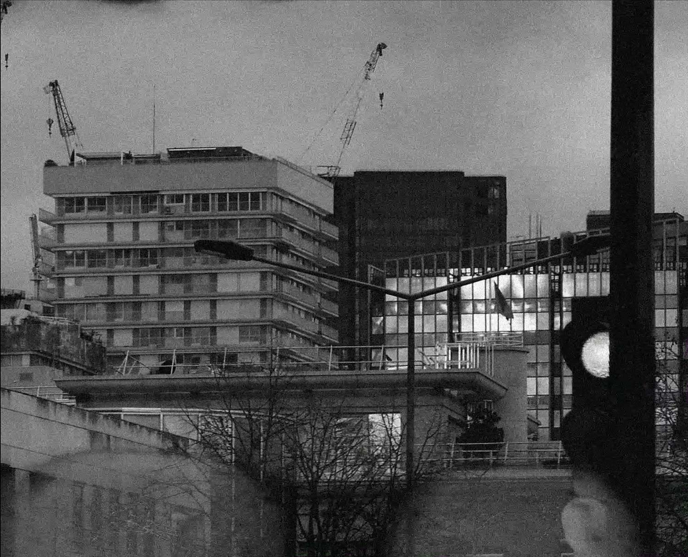
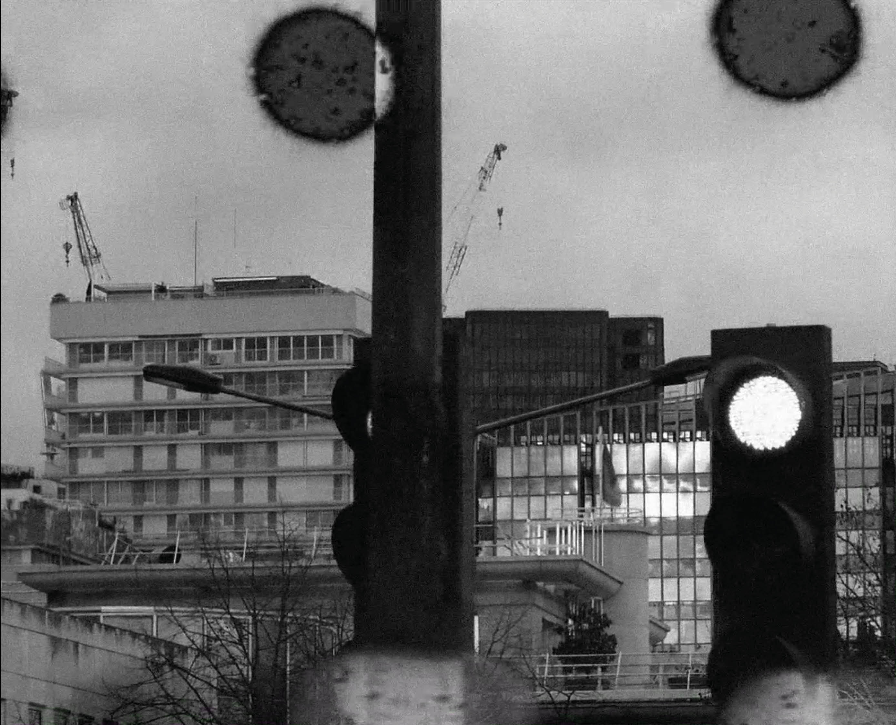
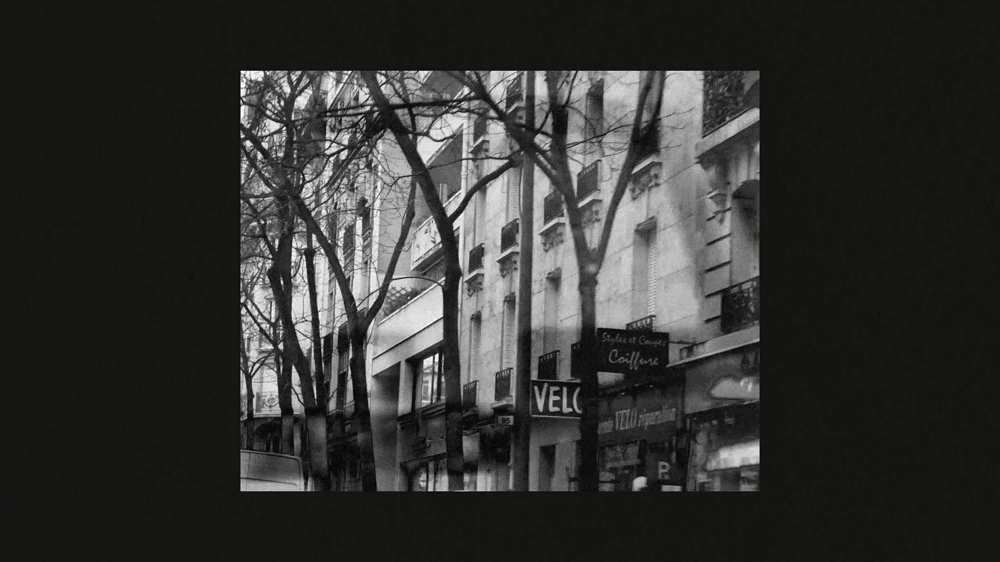
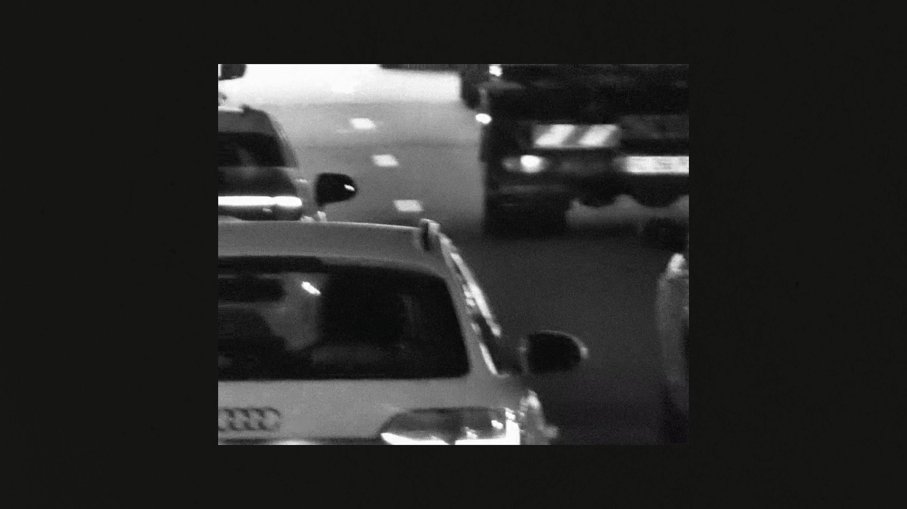
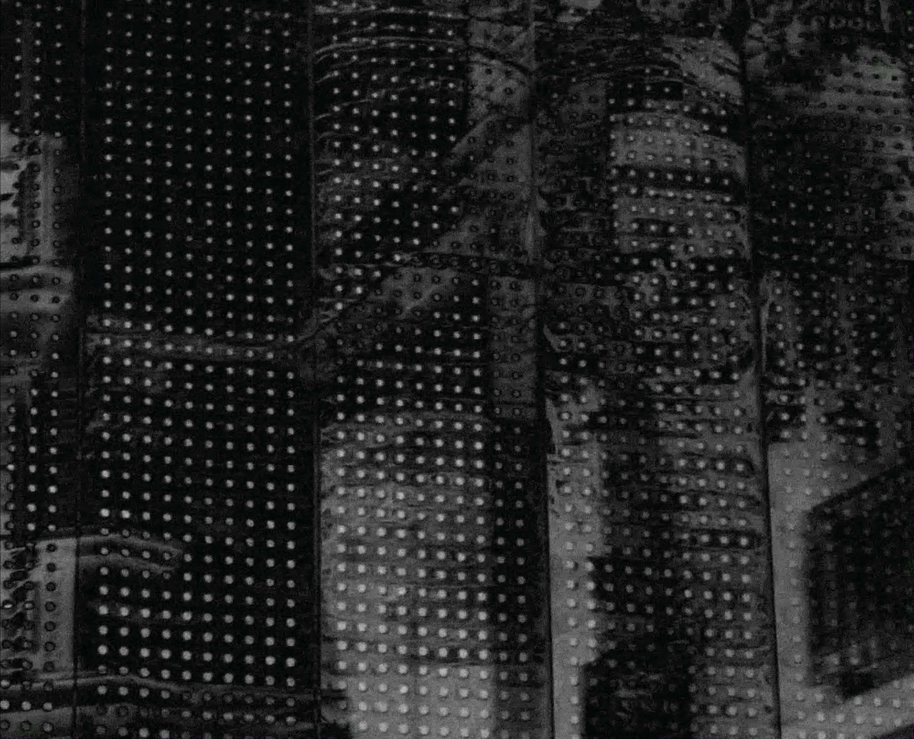
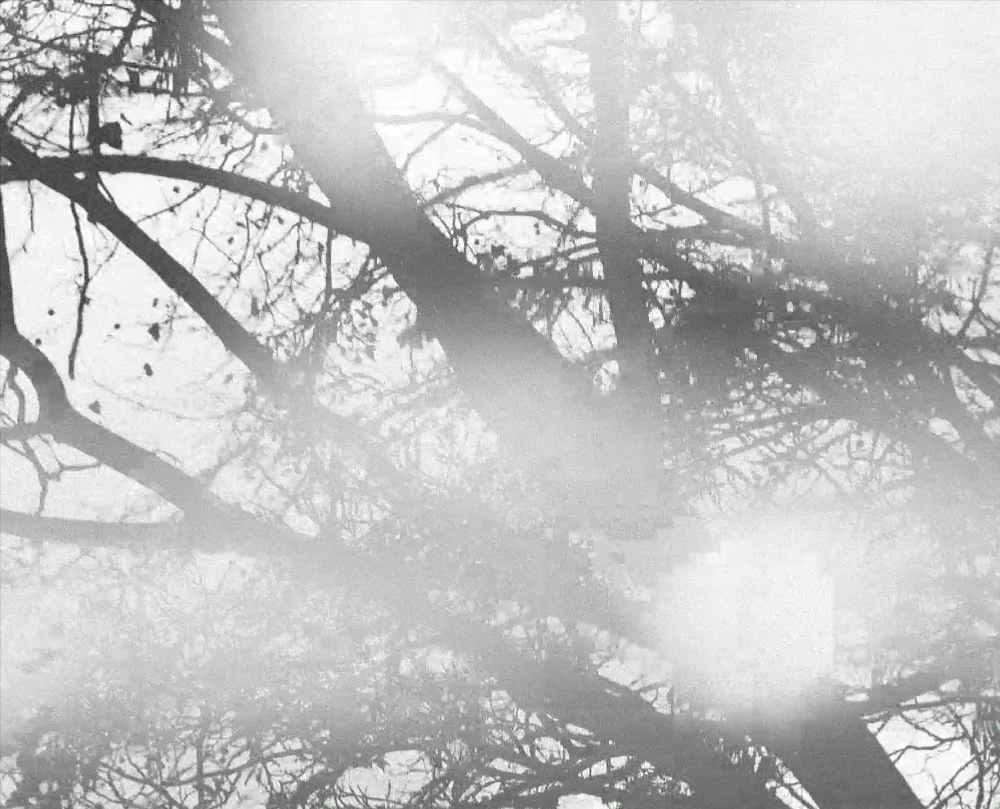